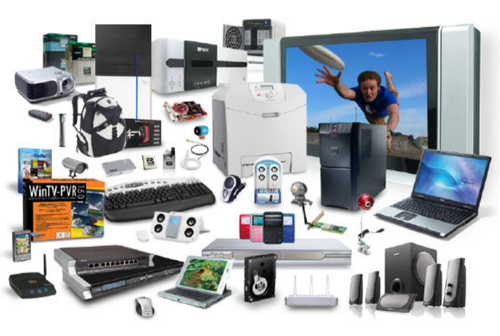
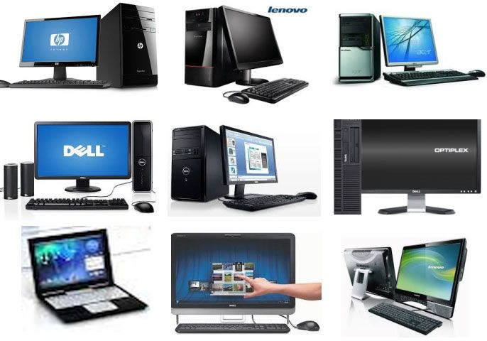
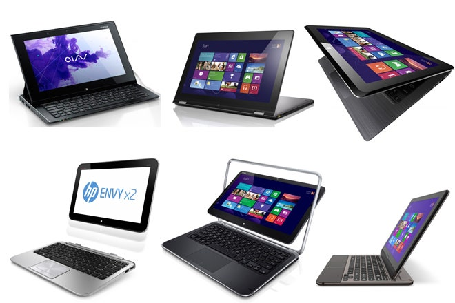

DO YOU WANT TO KNOW MORE ABOUT HTML AND NEED TO HAVE ACCESS ON IT TOOLS THAT CAN HELP YOU IMPROVE YOUR IT SKILLS?
  Laptop Sales vs. Desktop PC Sales, One Climbs, the Other Drops — What’s Ahead?
Analyst Take: It’s no secret that mobile is the new normal when it comes to both work and home life. Users want and need to be able to access their computers wherever they are — be it the kitchen table or the office — and that means devices that are easy to pack or carry. In that sense, the datapoints in the Finaria report is not surprising. Laptop sales are climbing, and expected to continue in that vein, while desktop PC sales drop. But that’s not really news. Even before the pandemic, the laptop market segment was on a steady upward trajectory in revenue, growing from $132 billion in 2018 to $140 billion in 2020 according to Statista. The same report showed steady growth in shipments of laptops and tablets over PCs during the same time period which clearly indicates a larger overall shift and preference toward smaller, more mobile computing devices.
Not all Global Markets Are Created Equal
When it comes to laptop sales vs. desktop PC sales, the United States is the leading laptop marketplace and is expected to generate $37 billion of the global revenue by 2025. The Chinese market, the second largest in the world, is expected to reach $14 billion by 2025. The desktop PC market is where this gets interesting. While there has been a steady global decline for the last few years, 2020 — due mostly to the pandemic — saw a growth in sales, but this is predicted to be short-lived. However, when we look at the individual markets, China is expected to see a three percent growth in desktop PC sales in the next four years, while the US market is expected to witness a 12 percent drop. While the push to remote work coupled with the increase in better performing laptops and other mobile devices could very well be the reason for the expected drop in the US, it is interesting to see the opposite happen in China
Laptops Expected to Peak in 2021—Then What?
An IDC survey showed global shipments of laptops bumped 26% during the COVID-19 pandemic to 218 million in 2020. The figure is expected to grow slightly to 225 million this year. From there, experts say the market will cool slightly, which begs the question: then what? Will folks continue to buy the next new laptop, or will another smaller, cooler mobile remote computing device take over? My guess is, eventually, the latter. As I watch my teenagers use their Dell Latitude 2-in-1 laptops, and my husband use his Microsoft Surface Pro 7, I am confident that combination laptops/tablets will continue to be the preferred computing method for at least the next five years.
Do you want to know more about this topic? Click on the link below:
Laptop Sales vs. Desktop PC Sales, One Climbs, the Other Drops — What’s Ahead?
Is It Time for PCs to Kick the Bucket?
At some point, I believe we will need to ask the question: have desktop PCs become extinct? I think the answer is no, with a caveat. As I previously mentioned, desktop PC shipments have been dropping steadily for 10 years (from 157 million shipped worldwide in 2010 to just 79 million in 2020), and the Finaria report emphasizes their future decline. As the traditional workplace will likely shift to some combination of hybrid, including both working from a physical office and working from home, it’s likely that desktop PCs will continue to lose traction in the marketplace. Computer manufacturers are taking note of this trend too, putting more powerful chips into laptop devices to meet customer expectations. And as smaller gadgets like tablets and phones become just as powerful as computers, I would not be surprised if laptops eventually take a backseat to these other devices, as well. That’s not a bad thing. Smaller devices mean less electronic waste and disposal, and of course, greater mobility. And the demand for mobility is not going away anytime soon.